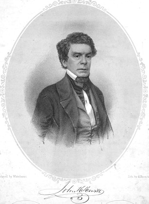
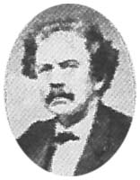

|  |  |
|
John Hill Hewitt was born in Maiden Lane, NY on 11 July 1801 and died in Baltimore, MD at the age of 89 on 7 October 1890. He was married to Estelle Mangin in 1827 until her death in 1860. They had seven children. He remarried in 1863 to Mary Alethea Smith and they had 4 children. One of his son's name was Horatio Dawes Hewitt. His father's first name, as was his brother's, was James. His brother, James Lang Hewitt (1807-1853), was the owner of a prominent music publishing firm under his own name. His most popular songs were Minstrel's Return From the War (1825), Hark, Brothers, Hark (1837), Aunt Harriet Betcha Stowe (1853), The Young Volunteer (1863), All Quiet on the Potomac To-night (1863), You Are Going to the Wars, Willie Boy! (1863), Somebody's Darling (1864), and Dreaming Forever of Thee (1875). NOTE: the Source* columns below refer either to: (1) The Lester S. Levy Collection by Box/Item number; (2) the Library of Congress' LCCN or CALL numbers in brackets (which can be used to request copies from the Photoduplication Services Division there); (3) if just labeled "LoC" then it is available at the American Memories webpages at the Library of Congress; (4) Duke University; or, (5) UNC-CH refers to the University of North Carolina at Chapel Hill Music Library. For further info about Hewitt, I recommned two dissertaions: The Life and Music Theater Works of John Hill Hewitt (1972) [#7219959] by William Craig Winden; and John Hill Hewitt: Bard of the Condeferacy [#6410586] (1964) by Coy Elliot Huggins. The latter includes a very definitive Catalog of Musical Works in its Appendix B (pp. 141-172). Both disserations are available from UMI of Ann Arbor, MI. A collection of five of his works (Rip Van Winkle, The Artist's Wife, The Vivandiere, Taken In, and The Musical Enthusiast) are published in The Collected Works of John Hill Hewitt (1994) edited by N. Lee Orr and Lyn Wood Bertrand, published by Garland Publishing (ISBN 0-8153-1370-5). A large collection of Hewitt's works, in manuscript only, are available in the Special Collections Department of the Robert W. Woodruff Library at Emory University, Atlanta, Georgia. Most of his published works are available at the Maryland Historical Society in Baltimore, Maryland. SPECIAL THANKS: to Noami Lynn Nelson, Director, Special Collections Digital Archive, Robert W. Woodruff Library, Emory University, Atlanta, Georgia 30322-2870, for her invaluable support of photocopies of unpublished manuscript scores. |
SONGS & INSTRUMENTALS |
||
| Title | Words | Source* |
|---|---|---|
1825 | ||
| Minstrel's Return From the War | Hewitt | 115/012-7 |
1828 | ||
| A Soldier's the Lad I Adore (Vocal Solo) (adapted to the original French air of Le Petite Tambour) | Hewitt | Baltimore: George Willig, Jr. |
| Greek March (for Piano) | none | Baltimore: George Willig, Jr. |
1829 | ||
| Farewell, Since We Must Part (Adapted to a German Air) [11 Nov.] | Hewitt | 042/029 |
| Oh! Soon Return (to an air by Mozart) [30 Sep.] | adapted by Hewitt | 042/095 |
1831 | ||
| Oh! Mount Thy Bright and Gallant Steed | Hewitt | 042/093-4; 360240@LoC |
| The Soldier's Farewell (adapted to a German air) | Hewitt | Baltimore: George Willig, Jr. |
1832 | ||
| Girls Beware (Ballad) | Hewitt | 049/026 |
1833 | ||
| Our Native Land (National Song) | Hewitt | 015/084-5 |
| Rosalie Clare (Vocal Solo) | Hewitt | Baltimore: George Willig Jr. |
| The Mountain Bugle (rev. and improved in 1839) | Hewitt | 370830@LoC; 042/084; ns7,7@UNC-CH |
1834 | ||
| Far O'er the Deep Blue Sea (Serenade) | R. H. Pratt, Esq. | 055/016-a,b |
| Ray, Love Me Not (adapted to original words) | Hewitt | Baltimore: George Willig, Jr. |
| The Sea Bird (Descriptive Song) | Hewitt | 042/118 |
1835 | ||
| Firemen's Grand March and Gallope [3 March] | none | 179/056 |
| Master and Pupil (An Instructive Duett Concertante) | Hewitt | 047/133; 047/134; 047/035; 175/102 |
| The Knight of the Raven Black Flume (circa 1835) | Hewitt | 116/097-8 |
| The Light Canoe | R. Horace Pratt, Esq. | 042/072-3 |
1836 | ||
| Days of Childhood (No. 4 of Songs of the Soiree) |
Hewitt | 042/010b |
| Fatherland! Dear Fatherland! (No. 10 of Songs of the Soiree) | Hewitt | 042/135b |
| Grand Military Waltz [24 Feb] | none | 010750@LoC; Baltimore: George Willig, Jr. |
| In Smiles We Met (No. 8 of Songs of the Soiree) | Hewitt | 042/069c |
| Our Hearts Are With Our Native Land (Song of the American Girl) (No. 1 of Songs of the Soiree) | Hewitt | 042/105a |
| She Knew Him Not (No. 7 from Songs of the Soiree) |
Hewitt | 042/069b |
| The Bridesmaid (Romantic Ballad) | Hewitt | 100/028-9; ns3,50@UNC-CH; 361490@LoC |
| The Bugle Horn (A Hunting Song) (No. 3 from Songs of the Soiree) |
Hewitt | 042/010a |
| The Fairmount Quadrilles
(including dance steps, |
none | 163/083; 033/063; 010720@LoC |
| The Knight from Palestine (Romantic Ballad) (circa 1836) | Hewitt | 042/064 |
| The Lake Spirit's Song (No. 6 from Songs of the Soiree) |
Hewitt | 042/069a |
| The Nahant Quadrilles
(includes dance steps: |
none | 055/035-6; 1837-010930@LoC |
| The Sun-Bright Isle (No. 5 from Songs of the Soiree) |
Hewitt | 042/010c |
| Village Belle (No. 9 from Songs of the Soiree) |
Hewitt | 042/135a |
| Why Comes He Not? (No. 2 from Songs of the Soiree) |
Hewitt | 042/105b |
1837 | ||
| Ah! Fondly I Remember (Ballad) [16 Aug] | Hewitt | 361710@LoC; Philadelphia: John F. Nunns |
| Away to My Mountain Home, Away (Vocal Solo) | Robert Grant, Esq. | Baltimore: George Willig, Jr. |
| Hark, Brothers Hark! (A Regatta Song) | J. H. Willis | 026/038; 361720@LoC |
| The Cavalier Rode on His Coal Black Steed | Hewitt | 043/029; 042/069; 042/016 |
| The Crow Quadrilles (arr.)
(1: Jim Crow; |
none | 056/018@Levy; 010990@LoC |
| The Crow Quadrilles (arr.)
(1: Zip Coon; |
none | 017/016-9; 056/020 |
1838 | ||
| Fair Lady, Wake! (Duett)[15 Jun] | Hewitt | 361760@LoC |
| Garde Vous (from the Operetta The Prisoner of Rochelle) [18 Oct] | Hewitt | 361960@LoC |
| Sweet Mariette (altered from a German Melody) [30 Jul] | adapted by Hewitt | 362100@LoC |
| The New Brighton Quadrilles (1: The Promanade |
none | 034/033; 011330@LoC |
| The Moonbeams Are Kissing the Wave (Ballad) [composed by I. T. Stoddard] | Hewitt | 122/063 |
| The Odd Fellows Grand Prominade March (aka The Oddfellow's March) | none | 178/067 |
| Ye Burning Stars[!] (Recitativo & Polacca) (from the pastoral oratorio Flora's Festival) | Hewitt | 035/124@Levy; 362050@LoC |
1839 | ||
| Away Then to the Mountains (adapted to a Favorite Melody from Emilie) [4 Oct] | Hewitt | 370600@LoC |
| Cremona Waltz [26 Apr] | none | 012060@LoC |
| We Speak of Her As One Long Gone (Song) (music by Joseph Philip Knight, 1812-1887) [20 Jun] | Hewitt | 370620@LoC |
| While the Evening Star Was Shining (adapted to a familiar National Melody [Yankee Doodle]) | Hewitt | 370850@LoC |
1840 | ||
| I Am Far from My Native Home | Hewitt | 181/132-3 |
| Mary, Now the Seas Divide Us (A Southern Refrain) [16 Dec] | Written & Adapted by J. T. S. Sullivan Esqr. | 371780@LoC |
| O K Gallopade | none | 041/047; 015/031 |
| The Betrothed (Ballad) | Hewitt | 100/014-5 |
1841 | ||
| Fall of the Oak (Vocal Solo) | G. Hill, Esq. | Baltimore: F. D. Benteen |
| I've Torn Thine Image from My Heart | Hewitt | Baltimore: George Willig, Jr. |
| Our Flag Is There (Patriotic Song) | Hewitt | 015/068 |
1842 | ||
| Mr. & Mrs. Snibbs (Comic Duett) | Hewitt | 049/051 |
| The Old Elm Tree (Patriotic Ballad) | Hewitt | 039/077; ns54,24&UNC-CH |
| The Old Family Clock [1 Nov] | Hewitt | 381980@LoC; Baltimore: Samuel Carusi |
1843 | ||
| Come, Soldiers, Come; or, Hewitt's Quick Step March (for Piano) | none | Baltimore: Samuel Carusi |
| Eleanora Waltz [21 Oct] | none | 031770@LoC; Baltimore: George Willig, Jr. |
| Piney Point Waltz [c1843; 10 Jan 1844] | none | 031750@LoC; Baltimore: George Willig, Jr. |
| The Saint of Erine Isle (Vocal Solo) | Hewitt | Baltimore: George Willig, Jr. |
| When Thou Wer't True | F. W. Thomas, Esq. | 102/124 |
1844 | ||
| Ho! for a Rover's Life; or, The Song of a Pirate (Descriptive Ballad) [20 Jun] | Hewitt | 391600@LoC ;1846-os41,24@UNC-CH: New York: James L. Hewitt & Co. |
| Lady Awaken (Serenade) [14 Sep] | Hewitt? | 400240@LoC; Baltimore: George Willig, Jr. |
| Linger Not Long! [19 Apr] | Hewitt | 400540@LoC; Baltimore: F. D. Benteen |
| Lizzie Green [19 Apr] | Hewitt | 400550LoC; Boston: Oliver Ditson and Co. |
| Sleeping I Dreamed, Love | Mrs. Mary Elizabeth Hewitt, 1807-1894 | 125/109; 106/173; 125/110 |
| The Alpine Horn (A Tyrollean) [20 Jun] | Hewitt | 391290@LoC |
| The Kentucky Gentleman (Ballad) | Hewitt | 004/063; 391240@LoC |
| The Mournful Good Night [20 Jun] | Dr. John C. McCabe | 391170@LoC |
| The Whig Rally (adapted to the Wreckers Daughter) [4 Jun] | Hewitt | @LoC |
| 'Tis Home Where'er the Heart Is (arr. by Hewitt) | Robert Dale Owen (from the Drama of Pocohantas) | 400470@LoC; ns5,38@UNC-CH |
| We're Afloat or The Midshipman's Farewell [3 Aug] | Hewitt | 400370@LoC |
1845 | ||
| Cease Troubled Bosom (from the Oratorio of Jephtha) | Hewitt | [M1.A13H (Case)] |
| Come, Take the Gentle Harp of Sorrow (Song of Josephine from the "Rival Harp") (adapted to a Greek melody) | Hewitt | 401950@LoC; Baltimore: F. D. Benteen |
| I'm Still Thine Own (adapted to a favorite Melody) | Hewitt | 402050@LoC; Baltimore: George Willig, Jr. |
| Love Strong in Death [28 Aug] | Hewitt | 402030LoC; Boston: Oliver Ditson and Co. |
| Oh! Give Me the Mountains (adapted to Michelle Carafa's [1787-1872] melody La Violette [30 May] | Hewitt | 401900@LoC; Philadelphia: George Willig |
| The Arlington Waltzes
(1: The Picnic; 2: The Potomac; |
none | 040/008@Levy; 051340@LoC |
| The Attache | Hewitt | 402160@LoC; Baltimore: F. D. Benteen |
| We're Out Upon the Moonlight Wave (Ballad) [18 Jun] | Hewitt | 401970@LoC; Baltimore: George Willig, Jr. |
1846 | ||
| Can I Forget Thee (Ballad) | Hewitt | Baltimore: George Willig, Jr. |
| Come Be My Love (a Chinese song, adapted) | Hewitt | Baltimore: F. D. Benteen |
| Go, We Must Meet No More (Ballad) [26 Dec] | Hewitt | 411650@LoC; Baltimore: F. D. Benteen, Plate No. 989 |
| Her Heart's Not There | Hewitt | 411540@LoC |
| How Beautiful Appears (from the oratorio Jeptha) | Hewitt | 125/029 |
| Joy Flies the Peaceful Valley [11 Mar] (Duett, from the oratorio Jephtha) | Hewitt | 410740@LoC; New York: Firth & Hall, 1 Franklin Sq. and New York: Firth, Hall & Pond, 239 Broadway |
| Let Washington Rest; or,Washington's Grave | Hewitt | 003/072; 014/057 |
| Lowland Fanny (from Songs of the Old Dominion, No. 2) | Hewitt | 035/062 |
| My Beauteous Child (from the Oratorio Jeptha) | Hewitt | 125/077; 791040@LoC |
| On to the Charge! | Hewitt | 086/073; os102,29@UNC-CH |
| Thus the Bright and Beautiful (Aria from the Oratorio Jephtha) [16 Mar] | Hewitt | 410670@LoC; New York: Firth & Hall |
| We're Out Upon the Moonlight Wave (Ballad) (Arr. for Guitar by Adolph Schmitz) [18 Nov] | Hewitt | 411000@LoC; Baltimore: George Willig, Jr. |
1847 | ||
| The Fall of Mexico (Military Divertimento) | none | 086/032 |
| The Moon Is Dancing on the Sea (from Songs of the Old Dominion, No. 1) | Hewitt | 035/066-7; os41,36@UNC-CH |
| The Old Church [29 Dec] | Dr. John C. McCabe | 431120@LoC; 041/048; Baltimore: F. D. Benteen |
| The Prisoner and the Swallow (adapted to a melody by A. Croises) [30 Dec] | Hewitt | 1857-621950@LoC; Baltimore: Henry McCaffrey |
| Yes, I Will Leave the Throng with Thee (Answer to Oh, Share My Cottage, Gentle Maid) | Hewitt | Baltimore: Frederick D. Benteen |
1848 | ||
| Columbia, Thou Land Great and Glorious | Hewitt | Baltimore: F. D. Benteen |
| Go and Ask My Mother (Comic Ballad) | Hewitt | 049/027; 052/015; 035/031 |
| Mary Blane (Ballad) (arr. by J. Hunter) [21 Nov] | 'new version' by Hewitt | 450410@loC; at Maryland Historical Society, Baltimore |
| Oh, Have I Not Been True to Thee (adapted to a beautiful melody) | Hewitt | 640380@LoC; Baltimore: George Willig, Jr. |
| The Maid of Monterey (Vocal Solo) [arranged for Guitar, 2 Jan 1851] (from Illustrations of the Mexican War) (adapted to a Mexican melody) | Hewitt | Baltimore: F. D. Benteen; 1851-520180@LoC |
1849 | ||
| Hark, 'Tis the Boatman's Horn (Ballad) (adapted) | Hewitt | Baltimore: F. D. Benteen |
| Leap O'er the Waves, Song of the Buccaneer (partly composed by Hewitt) | Hewitt | 641430@LoC; Baltimore: George Willig, Jr. |
| Look From Thy Lattice Gentle Lady (A Serenade) (adapted) | Hewitt | 641470@LoC |
| Look Up On That Banner (Song of the Patriot Mother to Her Son) (adapted and arranged) | R. Horace Pratt | 014/068-9 |
| My Heart's With Thee (Ballad) [15 Mar] | Hewitt | 461690@LoC; Baltimore: George Willig, Jr. |
| Sing, and Remember Me (music by William Cumming Peters, 1805-1866) | Hewitt | 614290@LoC |
| The Fountain Polka [5 Dec] | none | 120160@LoC; Baltimore: F. D. Benteen |
| There's Love for You & Me (adapted and arranged by Hewitt) [8 May] | Thomas Hood | 461850@LoC; Baltimore: George Willig, Jr. |
| The Sun Was Slowly Setting (Ballad) (Adapted to Music by [Mrs.] Estelle Hewitt) [5 Dec] | John Hill Hewitt | 461550@LoC; Baltimore: F. D. Benteen, Plate No. 1621 |
| You Cannot Doubt My Love (Ballad) [29 Oct] | Hewitt | 451510@LoC; Boston, MA: Oliver Ditson |
| You Remember When We Parted (Ballad) | Hewitt | 035/126; 461630@LoC; Baltimore: F. D. Benteen |
| Veni, Vidi, Vici (I Came, I Saw, I Conquer'd) (adapted)(Comic Ballad) [8Feb] | Hewitt | 461720@LoC |
1850 | ||
| Grand Promenade March (from Evenings at Home, No. 13) [12 Apr] | Hewitt | 140910@LoC; Baltimore: F. D. Benteen |
| I Will Often Think of Thee (adapted to a melody by Savero Mercandante, 1795-1870)[25 Oct] | Hewitt | 481420@LoC; os41,18@UNC-CH |
| Let Us Hope for the Best (Ballad) [31 July] | Hewitt | 472000@LoC |
| Oh, Have You Seen My Spanish Lady (A Romance) [23 Oct] | Hewitt | 480840@LoC; Philadelphia: A. Fiot |
| She Wept to Know She Lov'd (music by William Cumming Peters, 1805-1866) (Ballad) [6 Jun] | Hewitt | 481700@LoC; Baltimore: George Willig Jr. |
| Song of the Hungarian Exile (Vocal Solo) [12 Apr] | "The Bard of Baltimore" | 481710@LoC; Baltimore: F. D. Benteen |
| The Dying Trumpeter [2 Dec] | Hewitt | 471460@LoC; 661170@LoC; New York: William Hall & Son |
| The Jenny Lind Song (Polka) (adapted) | Hewitt | 481770@LoC; Baltimore: F. D. Benteen |
| The Loved One (Ballad) | Mrs. Mary W. Hoopes | 042/075-6 |
| The Single Man (Comic Song) (adapted by Hewitt) | Hewitt | 051/086 |
| The Union Forever (Patriotic Song) (Adapted to a melody from Lucia di Lammermoor [1835, by Gaetano Donizetti, 1797-1848] by Hewitt) | Hewitt | 016/091 |
| The Very Little Maid (A Comical Little Ballad) [25 Feb] | Hewitt | 451200@LoC; Philadelphia, PA: A. FIOT |
1851 | ||
| Call Me Thine Own (Vocal Solo) [22 May] (adapted from the Comic Opera, L'Eclair, 1835, by Jacques Francois Fromental Elie Halevy, 1799-1862) | Hewitt | 500830@LoC; Baltimore: F. D. Benteen |
| Can You Not Read in My Eyes (Waltzing Song) (adapted from a French Melody) [7 Apr] | Hewitt | 491870@LoC |
| Et Cetera (Comic Song) | Hewitt | 050/028 |
| I'm Only Sixteen (from Songs of the Alleghanians) | Hewitt | 047/075; 022/080-1 |
| It Wont Bear Mentioning | Hewitt | 050/050 |
| Let Me Sleep My Last Sleep in the Land of My Birth (No. 1, from Richard Turner's "Ballad Openings, at Tripler Hall, New York.)" | Hewitt | 680840@LoC; New York: William Hall & Son |
| Magnolia Polka [25 Mar] | none | 161230@LoC; Baltimore: George Willig, Jr. |
| Moonlight (From the Oratorio of the Fairy Bridal) [20 May] | Hewitt | 500850@LoC; Baltimore: George Willig, Jr. |
| Sweet Kitty Neal (Vocal Solo) [11 Oct] | Hewitt? | 580680@LoC; Baltimore: George Willig, Jr. |
| The American Boy | Hewitt | 500700@LoC; Baltimore: G. Willig Jr. |
| The Flag of Cuba [14 Nov] | John T. Humphreys Esqr. | 500980@LoC; Baltimore: George Willig, Jr. |
| They Said Thou Wer't Another's (Ballad) [4 Sep] | Hewitt | 491180@LoC; New York: Firth, Pond & Co. |
| Union Quick Step (adapted to the air O! Would I Were a Boy Again) | none | 161450@LoC; 661850@LoC; Baltimore: George Willig, Jr. |
| Widow'd Love | Hewitt | Baltimore: Henry McCaffrey |
1852 | ||
| Do I Not Love Thee [6 Jan] | Mrs. H. Marion Stephens | 520210@LoC; Baltimore: George Willig Jr. |
| Down Below (An Ethiopian Song) [17 Feb] | Hewitt | 520250@LoC; Baltimore: F. D. Benteen |
| El Dorado Polka | none | 040/077 |
| Elodie, 'Tis My Last Parting Song (Vocal Solo) [6 Nov] | Hewitt | 520490@LoC; Baltimore: F. D. Benteen & Co. |
| Happy Land Waltz | none | 690720@LoC |
| I Knew Thou Would'st Return | Frederick William Thomas, 1806-1866 | n0214@Duke |
| I Would Not Die at All
(Parody on I Would Not Die in Springtime [by Stephen C. Foster]) |
Hewitt | 067/076; 690710@LoC |
| Julia, "In a Lone Quiet Spot" [27 Sep] | William H. Morgan | 520350@LoC; Baltimore: J. E. Boswell |
| My Mountain Kate (Vocal Solo and Chorus) [23 Nov] | Hewitt | 520260@LoC; Baltimore: J. E. Boswell |
| Shaker's Quick Step [20 Mar] | none | 191110@LoC; Baltimore: F. D. Benteen |
| Sweet Rosa's Lips (Vocal Trio) (Catch) [also see "Miss Bodkin's Charms (1886)] | Hewitt | Emory: manuscript (OP3 9) |
| The Boarding School
(1: Dawning of the Day; |
none | 039/016@Levy; 191430@LoC; 1853-711050@LoC |
| The Cot in the Valley [29 Nov] | Hewitt | 520290@LoC; Baltimore: J. E. Boswell |
| The Dying Girl | Hewitt | 035/020-2; 520590@LoC |
| The Fine Old Southern Lady [9 Sep] | Hewitt | 520320@LoC; Baltimore: George Willig |
| The Indian Polka | none | 039/050; 190960@LoC; 1853-711140@LoC |
| The Jackdaws (Comic Ballad for the Olden Time) [20 Aug] | Hewitt | 520540@LoC; Baltimore: G. Willig |
| Will You Love Me, Jennie Dear [aka Will You Love Me, Jennie?] | Hewitt | 035/119 |
1853 | ||
| Aunt Harriet Beecha Stowe | Charles Soran, Esq. | 035/005@Levy; 550190@LoC |
| I'll Love Thee Then [13 Dec] | Finley Johnson Esq. | 550270@LoC; Baltimore: Miller & Beacham |
| Let's Sit Down and Talk Together [21 Nov] | from Mackellar's Droppings from the Heart | 550260@LoC; Baltimore: Miller & Beacham |
| Oh! While Adown Life's Stream We Guide [24 May] | J. Fred. Simmons | 550180@LoC |
| Our Fireside at Home (for one or two voices; adapted)[2 Feb] | Hewitt | 550140@LoC; Baltimore: Miller and Beacham |
| Where Art Thou! [2 Feb] | Nydia | 550130@LoC; Baltimore: Miller and Beacham |
1854 | ||
| Few Day's | Hewitt | 022/045-6 |
| Mid Carolina's Mountains | C. L. Hunter, M.D. | Baltimore: George Willig, Jr. |
| My Childhood's Happy Home (Vocal Solo) | D. P. Hoffman, M.D. | Baltimore: George Willig, Jr. |
| The Prima Donna Song (music from "The Prima Donna" (valse) by Louis Jullien, 1812-1860; arranged by F. W. Barbour) [19 Jan] | Hewitt | 561190@LoC; Baltimore: Miller & Beacham |
| You'll Miss Me Then | Hewitt | Baltimore: Henry McCaffrey |
1855 | ||
| Annie Bell (Vocal Solo) | F. Harrison, Jr. | Baltimore: Henry McCaffrey |
1856 | ||
| I'm Thine Alone [1 Jul] | May Allan | 621470@LoC; Baltimore: Miller & Beacham |
| The Wild Dream Is Past (adapted to the melody of Lenschow) | Hewitt | Baltimore: Henry McCaffrey |
| When Winds O'er the Lake Are Creeping | Hewitt | Baltimore: Miller and Beacham |
1857 | ||
| I Cannot Love Another | Eugene Raymond [pseud. for Hewitt] | a3272@Duke |
| Our Home's on the Dancing Wave [8 Oct] | Hewitt | 621820@LoC; Baltimore: Miller and Beacham |
| Scenes That I Loved in Childhood's Cloudless Hour (adapted from an opera by Gaetano Donizetti, 1797-1848) | Hewitt (using the pseud. Eugene Raymond) | Baltimore: George Willig, Jr. |
| This Then I'll Say How Much I Love | Hewitt | Baltimore: Henry McCaffrey |
| Tis True That I Have Flirted | Finley Johnson | Baltimore: Henry McCaffrey |
| You Don't Say So | Hewitt | Baltimore: Henry McCaffrey |
1859 | ||
| Loely Anna | Sir Walter Scott (from Ivanhoe) | 065/064 |
1860 | ||
| Anna Marye | James Maeder Magruder | 042/006 |
| Away to the Prairie, Away (Vocal Solo) | Hewitt | Baltimore: Miller and Beacham |
| Dear Land of the South | Eugene Raymond [pseud. for Hewitt] | Songs of Yesterday: pp. 363-4 |
| Flag of the Sunny South (circa 1860s) | E. V. Sharp | conf184@Duke |
| I Love My Native Land the Best | W. H. Hayward, Esq. | 014/011-2 |
1861 | ||
| A Light in the Window for Thee (Ballad) | anonymous | Baltimore: Miller and Beacham |
| Rock Me to Sleep, Mother | Mrs. Elizabeth Ann Akers Allen, 1832-1911 (using the pseud. Florence Percy) | 094/084-6; UNC-CH; (1861) music1204Duke; (1862) conf346@Duke |
| Santa Lucia (Vocal Solo) | Translated by Hewitt | Baltimore: Miller and Beacham |
1862 | ||
| The South | Charlie Wildwood | 094/109 |
1863 | ||
| All Quiet on the Potomac To-night | Mrs. Ethel Lynn Elliot Beers, or, Lamar Fontaine | 093/7-9; Duke |
| Dixie, the Land of King Cotton (from the Military Operetta The Vivandiere) |
Capt. Hughes of Vicksburgh | 093/045; Duke |
| I Will Meet Thee | Hewitt | 093/094; w1,24@UNC-CH; conf228@Duke |
| Southern War Song (vocal solo, composed at Columbus, Georgia) | Hewitt | Emory: in manuscript |
| The Soldier's Farewell: or, The South Shall Yet Be Free (adapted to the French Air Partant Pour La Syne) | Hewitt | conf367@Duke |
| The Stonewall Quickstep | none | 095/107-8; conf0398@Duke |
| The Unknown Dead | Hewitt | 094/154; os3,3@UNC-CH; Duke |
| The Young Volunteer | Hewitt | 094/193 |
| You Are Going to the Wars, Willie Boy! (Ballad) | Hewitt | conf0452@Duke |
1864 | ||
| Freedom's Muster Drum | Hewitt | 093/061; conf0187@Duke |
| Oh, Come to Me, Love, in a Beautiful Dream (adapted to the air of Mollie's Dream) | Hewitt | 093/171 |
| Somebody's Darling | Marie Ravenal de la Coste (?-1936) | 094/103; conf370@Duke |
| Take Me Home (arr.; melody by Herman L. Schreiner ?) | Hewitt (using the pseud. of Eugene Raymond) | conf73@Duke |
| Three Cheers for Our Jack Morgan (music by Daniel Decatur Emmett, 1815-1904) | Hewitt (using the pseud. Eugene Raymond) | conf0410@Duke |
| When Upon the Field of Glory (Answer to When This Cruel War Is Over) (music by Herman L. Schreiner) |
Hewitt | conf0443@Duke |
| Yes We Think of Thee at Home (Answer to Do They Think of Me at Home) (music by E. Clarke Ilsey) | Hewitt | 094/192; conf85@Duke |
1865 | ||
| Dreaming of Thee (Ballad) | J. Dickson Bruns, M. D. | 093/048-9; conf164@Duke |
| Why Do We Love So Fondly | Hewitt | Baltimore: William C. Miller |
1866 | ||
| Claribel (from Confederate Songs Published During the War) | Charlie Wildwood | 200001863@LoC/IHAS/CWM |
| I'm Thinking of You Now Mary, or Thou Art Lost to Me | anon. | 093/108 |
1868 | ||
| Twine a Laurel Wreath | Hewitt | 131/013 |
1870 | ||
| Requiem on the Death of Gen. R. E. Lee [12 Oct.?] (chorus for mixed voices) | Hewitt | Emory: manuscript (OP3 8) |
1875 | ||
| Dreaming Forever of Thee | Hewitt | LoC |
1876 | ||
| Memories of Love | Charles A. McNamee | 10515@LoC |
| The Voice of the Waves (Descriptive Ballad) | Hewitt | LoC |
1877 | ||
| How Can I Love Thee, Land of the Vine? (Duett for Soprano and Tenor) | Hewitt | Emory: manuscript (OP3 9) |
1880 | ||
| Clemie Here, Clemie There (Vocal Solo) | Hewitt | Emory: manuscript (from OP3 7) |
1886 | ||
| Miss Bodkin's Charms (Vocal Trio) (Catch) | Hewitt | Emory: manuscript (from OPS3 9) |
1887 | ||
| Annabel Lee (Vocal Solo) | Edgar Allan Poe, 1809-1849 | Emory: manuscript |
| Bells (Quartette) | Hewitt | Emory: manuscript (OPS3 8) |
1890 | ||
| Jesus, Lead Me - I Am Blind (Vocal Solo: a Revery written and composed whilst confined to his fatal sick couch, in his eighty-ninth year.) [June] | Hewitt | Emory: in manuscipt (from OP3 7) |
PUBLISHED and NOT DATED | ||
| Title | Words | Source* |
|---|---|---|
| Alfin Brillar (Cavatina) (Music by Luigi Ricci) | English words by Hewitt | Baltimore: F. D. Benteen |
| Come While the Nightengale Sings to the Rose (c1866+) | Hewitt | Boston: Oliver Ditson and Co. |
| Freedom's Battle Storm | Hewitt | Boston: Oliver Ditson and Co. |
| Hearts of Steel (c1866+) | Hewitt | Boston: Oliver Ditson and Co. |
| Here's the Bower (Vocal Duet and Chorus) | Hewitt | Baltimore: F. D. Benteen |
| I've Wander'd Far from Thee, Mother (music by Dr. J. M. Johnson) | Alpha (pseud. for Hewitt) | Maryland Historical Society, Baltimore |
| I Go, My Friends, I Go (music by Francis R. Brown) | Hewitt | Maryland Historical Society, Baltimore |
| Lightly We Skim O'er the Sparkling Sea (adapted from a Brazilian Barcarole by Eugene Raymond [pseud. for Hewitt]) | Eugene Raymond (pseud. for Hewitt | Boston: Oliver Ditson and Co.; manuscript at Emory |
| Mary, Oft I'll Think of Thee (Vocal Solo) | Hewitt | Boston: Oliver Ditson and Co. |
| My Southern Home (c1866+) | Hewitt | Boston: Oliver Ditson and Co.; manuscript at Emory |
| None Remember Me (c1866+) | Hewitt | Boston: Oliver Ditson and Co. |
| Now, This Cruel War Is Over (c1866+) | Hewitt | Boston: Oliver Ditson and Co. |
| O'er the Deep Sea | Hewitt | Boston: Oliver Ditson and Co. |
| Oh! Must We Part to Meet No More | Hewitt | Boston: Oliver Ditson and Co. |
| Oh! Thou Who Lov'st to Hear My Prayer | Hewitt | Boston: Oliver Ditson and Co. |
| Once More at Home (c1866+) | Hewitt | ??? |
| One Kiss Before We Go (Vocal Solo) | R. Horace Pratt, Esq. | Baltimore: John Cole |
| Our Gallant Bark (Glee) | Hewitt | Boston: Oliver Ditson and Co. |
| Parting Song (c1866+) | Hewitt | Boston: Oliver Ditson and Co.; at Emory |
| Robert! Thou Whom I Love (music by Giacomo Meyerbeer, 1791-1864) | Words translated by Hewitt | Maryland Historical Society, Baltimore |
| Roxalana (Variations on a Theme from Haydn's Overtures, adapted for the piano) | none | Philadelphia: Carr and Society |
| Santa Anna's L.E.G. | Hewitt | Boston: Oliver Ditson and Co. |
| Sister Waltzes | none | Boston: Oliver Ditson and Co. |
| Snow Drop Waltzes | none | Boston: Oliver Ditson and Co. |
| Sweet Memories of Thee (c1866+) | Hewitt | Boston: Oliver Ditson and Co. |
| The Alamo | Hewitt | Boston: Oliver Ditson and Co. |
| The Ladie's Man (adapted to a popular melody) | Hewitt | Baltimore: George Willig, Jr. |
| The Voice of the Weaver (c1866+) | Hewitt | Boston: Oliver Ditson and Co. |
| Trust No in Life, Love | Hewitt | Boston: Oliver Ditson |
| We Were Children Together | Hewitt | New York: Firth, Hall and Pond |
| Where the Sweet Magnolias Grow | Hewitt | Boston: Oliver Ditson and Co. |
| Wilt Thou Go Far Away? | Hewitt | Baltimore: Oliver Ditson and Co. |
| Yes, I Will Leave the Festival Hall | Hewitt | Baltimore: Oliver Ditson and Co. |
MANUSCRIPTS NOT DATED NOR PUBLISHED | |
| Title | Words |
|---|---|
| Ahmed al Kamal (Hunting Chorus for men's voices) and Holy Sherman York | Hewitt |
| Array'd in Dances of Golden Light (Vocal Solo) | Hewitt |
| Battle Song (Vocal Solo) | J. J. Stewart [pseud. for Hewitt] |
| Bung Your Eye (An Old Scotch Song) | none |
| Chorus of Winds (Chorus for Mixed Voices) | Hewitt |
| Come Dwell With Me (Song of the Chamois Hunter) | Hewitt |
| Come, Tune, My Boys, and See That You Accord (Glee for Men's Voices) | Hewitt |
| Cool Night Wind (Vocal Solo) | Hewitt [words are no longer readable] |
| Corn Riggs (Rondo for Piano) | none |
| Darling Jane (Adapted to a Mesica Melody) | Hewitt |
| Darling, Tell Me Yes | John G. Lasce |
| Days of Childhood (Vocal Solo) | Hewitt |
| Dear Lisa List (Serenade for Men's Voices) | Hewitt |
| Do You Love Me, Jennie? (Vocal Solo) | Hewitt |
| Ellen Vane (Vocal Solo) | anon. |
| Fair Lady, Awake (Glee for Men's Voices) | Hewitt |
| Farm Yard March (for Piano) | none |
| Finale (Chorus for Mixed Voices) | Hewitt |
| Friendship (Vocal Solo) | Hewitt |
| Good Night, Sweetheart (Vocal Solo) | anon. |
| Guitar (composition for guitar written from Mrs. M. T. Cox) | none |
| Hans Farewell Song (written for a good-natured German who was about to sell his business and return to his fatherland. He sand it as a farewell treat.) | Hewitt |
| High on the Mountain the Last Sunbeams Sleep (Vocal Solo) | Hewitt |
| Him, the Almighty Power (No. 1) (Chorus for Mixed Voices) | Hewitt |
| I Live for Thee (Vocal Solo) | Hewitt |
| I Shouldn't Like to Tell (Vocal Solo) [by Fred Buckley?; arr.?] | S. C. |
| If You Love Me, Tell Me So (Vocal Solo) | Emilia Lillian Whiting |
| I'll Count the Hours (Vocal Solo) | F. W. Thomas, Esqr. |
| I'm Thinking of My Mother (Version 1) (Version 2) (Vocal Solo) (circa 1861-65) | Hewitt |
| In Smiles We Met (Vocal Duet) | Hewitt |
| Jannet (Vocal Solo) | Hewitt |
| Jennie, Do You Love Me? (Vocal Solo) | Hewitt |
| Lament of the Swiss Mountaineers (Quartette [for Men's Voices]) | Hewitt |
| Laughing Quartette [for Men's Voices] | Hewitt |
| Let Me Kiss My Mother's Picture (Vocal Solo) [circa 1870] | Hewitt |
| Lilly Dale (Song and Chorus) (by H. S. Thompson, 1852; arr.) | H. S. Thompson, 1852 |
| Look From Your Wider (Ethiopian Serenade [for Alto, Tenor and Bass]) | Hewitt |
| Lord Ullan's Daughter (Glee for Men's Voices) | Hewitt |
| Matrimonial Squabble (Duett for Soprano and Tenor) | Hewitt |
| Medly Trio (for clarinet and two flutes) | none |
| Melody of a Dripping Water Pipe (for piano) | none |
| Memories That Cling to the Heart (Vocal Solo) | Hewitt |
| Minnie Moore--Love Making by the Sea (Vocal Solo) | Hewitt |
| Moonlight (Vocal Solo) | Hewitt |
| Music of Captain Jack | Hewitt |
| My Home Among the Hills (from the German air, Der Krieger und seine Flasche) (Vocal Solo) | Hewitt |
| My Love She Was a Bonnie Lassie (Vocal Solo) | Joseph J. Stewart |
| Ode for the 4th of July (part song for mixed voices) | Hewitt |
| Ode in Praise of Mechanic Arts (chorus for mixed voices) | Hewitt |
| Oh, Do Not Chide Me When I Weep (Vocal Solo) | Hewitt |
| Our Gallant Bark Is on the Deep (Glee for Men's Voices) | Hewitt |
| Over the Sea (Vocal Solo) | Hewitt |
| Overture (for brass and woodwinds) | none |
| Quadrille (for piano) | none |
| Rosabel (Vocal Solo) | Hewitt |
| Serenade (Duett and Chorus) | Hewitt |
| Song of a King Crab (Vocal Solo) | Hewitt |
| Song of the Bell (chorus for mixed voices, with solos) | Hewitt |
| Song of the Forge (Vocal Solo) | Hewitt |
| Song of the 'Resurrection Men' (Vocal Solo) | Hewitt |
| Song Set to a Melody Made by an Ungreased Cart Wheel (Vocal Solo) | Hewitt |
| Table Glee (for Men's Voices) | Hewitt |
| Temperance Glee (for Men's Voices) | Hewitt |
| The Alpine Horn (Duet) (circa 1843 or '44) | Hewitt |
| The Bard's Last Song (Partly from a Norman melody) | Hewitt |
| The Child's Choice (a trio for children's voices, topical song) | Hewitt |
| The Dreams of Early Youth Have Fled | Hewitt |
| The Festive Mosquito (Vocal Solo) | Hewitt |
| The German Serenaders (trio for STB w/solos) | Hewitt |
| The Land of King Cotton (Piano Solo) | none |
| The Maiden and the Brook (Vocal Solo) | Hewitt |
| The May Queen (chorus for mixed voices) | Hewitt |
| The Merry Bells Will Ring (Vocal Solo) | Hewitt |
| The Mocking Bird (Vocal Solo) (circa 1864) | Hewitt |
| The Origin of Bock Beer (Vocal Solo) | Hewitt |
| The Raven (Mixed Chorus) | Edgar Allan Poe, 1809-1849 |
| The Stuttering Lover (Vocal Solo) | Hewitt |
| The Trooper's Farewell (Vocal Solo) | Hewitt |
| The Tune the Old Cow Died On (A Pathetic Ballad) (Vocal Solo) | Hewitt |
| The Wreckers (Vocal Duet) | Hewitt |
| Thou Art Another's (Vocal Solo) | Hewitt |
| Thus Will We Pass the Merry, Merry Night (quartet for men's voices) | Hewitt |
| To Mrs. J. F. Thomas's Dog, Nigger (Vocal Solo) | Hewitt |
| To My Grandson on His Donning Pants and Jacket (Vocal Solo) | Hewitt |
| Warrior Troop (a march for flute, horns, clarinets, trumpet, bugle, trombone, and bassoon) | none |
| When Morning Mists (Vocal Solo) | Hewitt |
| Women's Rights (Duet) | Hewitt |
| Why Fall These Tears (Vocal Solo) | William W. Skaats |
OPERAS/OPERETTAS | ||
| Title | Words | Year |
|---|---|---|
| Rip Van Winkle (Comic Opera in 3 Acts: Act 1, Act 2, Act 3) | Hewitt | 1851 |
| Taken In (Comic Operetta in 3 Acts: Act 1, Act 2, Act 3) | Miss Fanny Stewart | December 1879 |
| The Artist's Wife (Operetta in 3 Acts: Act 1, Act 2, Act 3) | Hewitt | July 1863 |
| The Musical Enthusiast (Parlor Operetta in 2 Parts: Part 1 and Part 2) | Hewitt | 1872 |
| The Prisoner of Montery; or, The Secret Panel (Farce) | Hewitt | 1863 |
| The Vivandiere (Military Operetta in 3 Acts) (Act 1, Act 2, Act 3) | Hewitt | 1862; rev. 1868; rev. 1879 |
ORATORIOS | ||
| Title | Words | Year |
|---|---|---|
| Jephtha among which were, separately published, the following [see above]:
| Hewitt | 1845 |
CANTATAS | ||
| Title | Words | Year |
|---|---|---|
| Flora's Festival (Flora and Forester, Arr. by Thomas Martin Towne, 1904) | Hewitt; Edited by William Batchelder Bradbury, 1816-1868 (Lyrics to Flora and Forester) | (1838, 1863); 1847 |
| The Fairy Bridal | Hewitt | 1871 |
| The Revellers (Juvenile Cantata in Two Parts) | Hewitt | 1848; 1874 |
PLAYS | ||
| Title | Words | Year |
|---|---|---|
| Ben Bolt | Hewitt | 1863 |
| Female Lobbyist | Hewitt | 1874 |
| Heart Struggles | Hewitt | 1866 |
| King Linkum the First (musical burletta) | Hewitt | 1863 |
| Lemora | Hewitt | 1867 |
| Lingomar the Seminole | Hewitt | 1863 |
| Link by Link | Hewitt | 1873 |
| Little Lou | Hewitt | 1876 |
| Mother and Daughter | Hewitt | 1878 |
| Protector Wanted | Hewitt | 1863 |
| The Avengers | Hewitt | 1876 |
| The Battle of Leesburg (melodrama) | Hewitt | 1862 |
| The Broken Pledge | Hewitt | 1873 |
| The Carbonari | Hewitt | 1873 |
| The Courier | Hewitt | 1863 |
| The Exempt; or, Beware of the Conscript Officer | Hewitt | 1863 |
| The Female Volunteer | Hewitt | 1876 |
| The Governess | Hewitt | 1853 |
| The Jayhawker | ???? | ???? |
| The Log Hut | ???? | ???? |
| The Lone Star of Cuba | Hewitt | 1873 |
| The Marquis in Petticoats | ???? | ???? |
| The Polish Martyr | Hewitt | 1866 |
| The Roll of the Drum | Hewitt | 1863 |
| The Scouts; or, The Plains of Manassas (melodrama) | Hewitt | 1861 |
| The Veteran | Hewitt | 1863 |
| Washington | Hewitt | 1832; 1875 |
BOOKS | ||
| Title | Year | |
|---|---|---|
| Miscellaneous Poems | 1838 | |
| War, a Poem with Copius Notes, Founded on the Revolution of 1861-62 | 1861 | |
| Shadows on the Wall or Glimpses of the Past (A Retrospect of the Past Fifty Years) [Sketches of Noted Persons Met with by the Author. Anecdotes of Various Authors, Musicians, Journalists, Actors, Artisans, Merchants, Lawyers, Military Men, &c. &c. Met with in Baltimore, Washington, Richmond, and other Southern Cities. Also the Historical Poem of De Soto, or the Conquest of Florida, and Minor Poems.] | 1877 | |